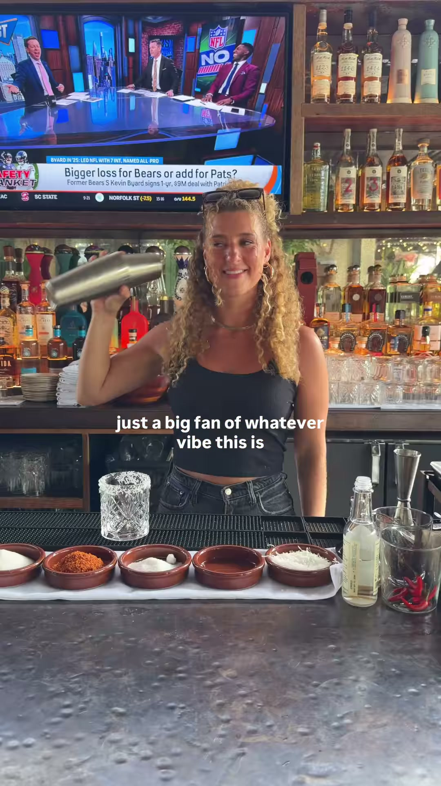
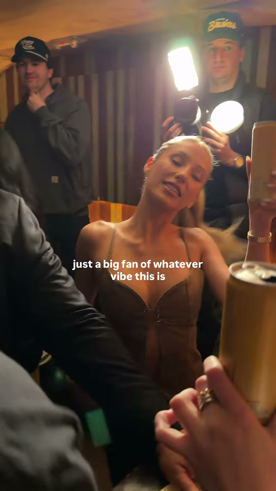
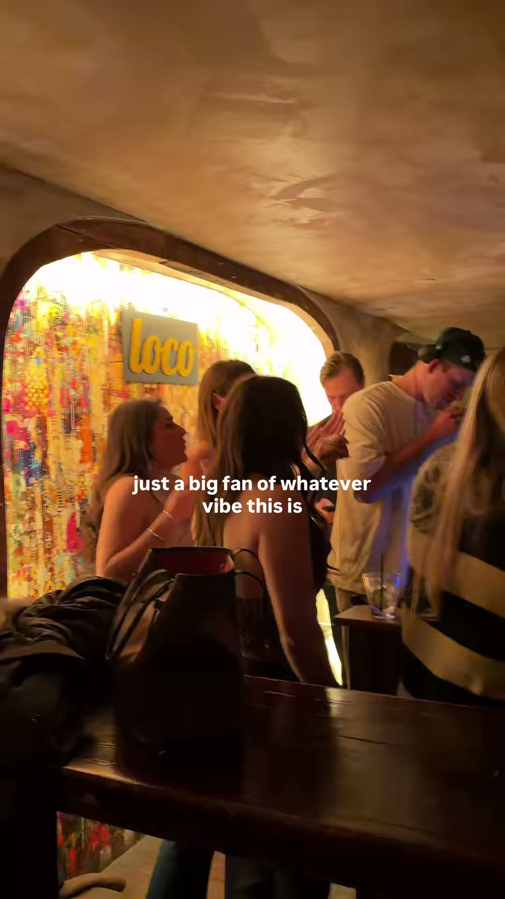
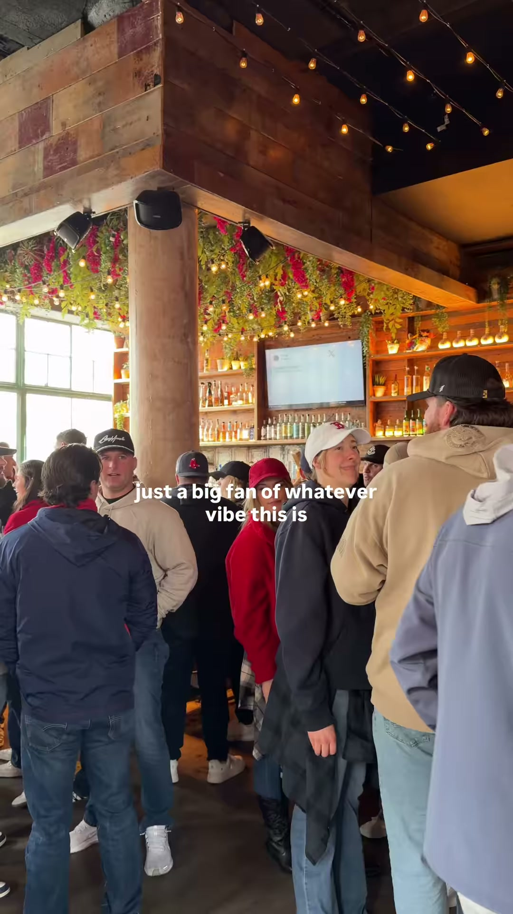
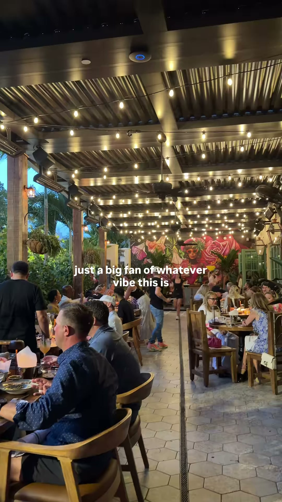

Shoot plan · rest of season 2026 · built 4 Aug
Every reference below was downloaded and watched frame by frame, not read off the caption. Three turned out to be the same trend twice over. Grouped by what the shot physically needs rather than by theme, seventeen of the nineteen fit into a single day, 11:00 to 23:00.
Six of them need direct sun. It is 4 August and the season closes on 26 September. That block cannot slip. The two long people pieces are the exception to the one-day rule: they want a genuinely big night, so they go on 21 Aug or the bank holiday.
Six references, one table, one tripod that does not move. Four of them are appear-cuts or screen gimmicks, and every one of those dies if the camera shifts between takes, so they all belong in the same locked-off position. Shoot the clean beauty passes while the light is best, then the gimmicks from the same marks. refs / A-drinks-in-the-sun /
No text at all. POV seated at a branded barrel table, hands in shot, straw stir, clink, top-down on the logo. Hard midday sun, bunting, outdoor yard.
“You said: Let’s get drinks after work.” then “I heard: Meet me at Lawn Club.” Cocktail hero, astroturf terrace with picnic benches, clink. Ends on a location-pin card.
A real iOS control panel is composited over the frame. A hand drags brightness up and flips Do Not Disturb on. As it brightens, the food appears. Ends “Do Not Disturb… Just Eat.”
A phone lies flat on the table showing a photo of a drink. A finger taps the screen. The real drink appears beside it in a hard cut. Logo end card.
A hand turns the pages of a physical menu. Every page turn, a different drink or dish is already on the table. Six items in five seconds, one locked-off camera.
“wait.. let me wipe the camera.” Frame is blurred and green. Black flash. “ah, much better.” Sharp macro food and a drink. Same table both halves.
Our versionSomeone wiping their glasses. Open on their blurred point of view, they take the glasses off and clean them, and the frame snaps sharp onto the drink. The reveal is motivated by something happening in the world rather than a hand smearing the lens, so it does not read as a gimmick.
“If you’re looking for us this summer, we’ll be wherever the Spritzes are.” Still drink photography for the grid. Shoot it in the same setup as the reels above, same light, same table.
Needs staff time and the bar, not the sun and not the crowd, so it slots into the gap before doors. One camera on sticks. Zero production value and it works. refs / F-staff-bar /
“Blind Pour Challenge” in big text. Staff blindfolded with a bar towel or a bucket hat pour three shots to the same level. Four or five of them, several attempts, “(attempt 2)” captioned when someone fails. Shoot the reactions, not just the pour.
Fifteen minutes of shooting, all the work at the desk. Locked-off empty wides of the entrance, bar, screen, stage, full yard and the corner seating, fifteen seconds each, no people and no camera movement. This is the highest-value quarter hour of the day: it funds every AI post for the rest of the season without another shoot. Ask the venue for the real CCTV angle while you are at it. refs / E-ai-cctv /
A static plate of the front door with an “ALCOVE Front Door Cam” burn-in and a timestamp. An AI big cat walks across the paving and off. Cut to black: “08 AUG / SAVE THE DATE.” Caption: “Checked the cameras last night and a lil bit stunned… Full info Thurs.”
Empty pass
Three setups, taped at load-in. Same lens, same height, same exposure on both passes.
B Empty to full · three pairs
Batch Fifty Two · 7.8s · view ↗
Full pass
Back on the same three marks. The whole effect dies if the tripod moved, so tape the legs and photograph the tape.
All three of these are cut from the same three buckets, so shoot in threes: one drink macro, one room wide, one people moment. Ten times through the night and you can build every format here without shooting anything twice. The split screens deliver landscape and the montage delivers vertical, so frame with headroom and crop both from one take. Cast the after-work and 30 to 45 groups on purpose rather than defaulting to the youngest table. refs / C-room-at-peak /
Only three shots exist: cocktail on table, wide of the room looking out, plate set down. Cycled on the beat with a single word pinned to the right of frame that swaps with the shot: Drink / Vibes / Food.
Vertical split screen. Left column WHY PEOPLE COME carries drink macro and pours. Right column WHY PEOPLE STAY carries the sax player, the bar team, the room, the crowd. Cuts land in pairs.
The identical split screen from a different venue. Left is food and latte art, right is staff faces and customers laughing. Two of your fourteen links are this one trend, which confirms it works but means you are building one format, not two.
Block C gets you the room. This gets you the humans in it, and they are not the same job. C can be composed, on sticks, shot from the edge. G has to be at face level, handheld, and inside the group — close enough that people are reacting to each other rather than to you. It also carries an obligation C does not: faces in close-up need actual permission, and the one-person piece needs a proper yes from whoever is in it. refs / G-people /
The two long ones are the same footage doing two different jobs. One invites people to the next event, one carries a survey request. Neither was shot for its post. That is the same argument as the plate bank: one good night of faces funds months of posts that would otherwise each need their own shoot. Shoot the bank on the big Saturday, and if the crowd is thin, top it up on an event night — 21 Aug or the bank holiday weekend.
A member of staff carries a tray of two beach-ball cocktails across the yard, laughing, then hands one over. Text is a relatable “the type of drink I order when…” joke, and it carries a real offer (2-4-1, 5pm to 7pm). Personality first, promotion smuggled in behind it.
Our versionEarly doors, the after-work crowd. Same format but shot 17:00 to 19:00 with the corporate lot, not the youngest table. This is where the 30 to 45 casting note stops being a note and becomes an actual shot.
Football shirts, arms up, grown men hanging off each other. Shot from inside the crowd, not from the edge of it — shaky, unpolished, and that is exactly why it works. Text ties it to an occasion: “It’s payday weekend, bank hol & you’re in STACK.”
Our versionNeeds a real trigger to react to. A goal on the big screen, a drop, or a chorus. Get in position before the moment, not after it.
Nearly a minute of one big night: DJ, packed floor, disco balls, dancing on the benches, a singer working the mic, tables of people laughing. One line pinned throughout — “you’re invited btw” — which turns a recap of last week into an advert for this week.
Fifty seconds of crowd, faces, couples, a live band and someone’s dog — carrying a pinned CTA: “Have a say in your STACK experience. Take our survey now.” Nothing here was shot for this post. It is the same bank as the reel beside it, spent on a job that would otherwise be a boring graphic.
A grab-bag with one caption pinned over the whole thing: “just a big fan of whatever vibe this is.” Food, a bartender mid-shake, the exterior, the crowd, a couple of daft street signs. No shot is precious and none lasts longer than a fifth of a second, so the edit does the work, not the footage.
Because that last one is a montage, here are the person moments pulled out of it. Five looks, each about a fifth of a second on screen. This is the shot list for the block: not “film the crowd”, but these specific five things.





This is a rig, not a shot. Clamp it above the door, start it rolling at opening, come back at the end of the night. It runs while you shoot block C, and one night of arrivals gives you a library of faces for every future edit. Needs the venue’s permission for the mount and a filming notice at the door, sorted before the day rather than on it. refs / D-entrance-overhead /
A camera is mounted directly above the entrance mat pointing straight down. Everyone who walks in looks up and waves, poses, holds up a sign. Twelve groups in nineteen seconds. Text: “POV: YOU PULLED UP TO SUMMER AT UNION”. Ends on a designed poster card with day, times and address.
One Saturday · 12 of 14 formats · 10 to 12 posts
Read the “needs” column of the blocks above and the day builds itself. A, F and E all want an empty venue and a static camera, so they go in the morning. C and D want the crowd, so they go after doors. B brackets the whole thing.
Fri 5pm–midnight · Sat & bank holidays 2pm–midnight
Every date the yard is open between now and the end of the season. September light is a coin toss, so anything that needs sun has to happen in the eight August dates.
7
August8
Shoot day14
—15
Backup shoot day16
Community Shield21
Premier League opens22
First full PL Sat28
—29
Bank holiday wknd31
Bank holiday4
September5
—11
—12
—18
—19
—25
—26
Season closesRead before commissioning any of it
Spider-Man is a Marvel and Disney trademark. Michael Jackson’s likeness sits with his estate. Jude Bellingham is a living person with active commercial deals and image rights. In paid promotional content for a venue, that exposure lands on the client, and it is not a technicality.
The Alcove reel works precisely because a big cat belongs to no one. Keep the mechanic and swap the subject: a leopard, a gorilla, an escaped penguin, an astronaut, a knight in armour, a Yeti for the winter season. Same joke, no letter. If a celebrity angle is genuinely wanted, the safe route is a real lookalike or an obvious parody framing, agreed with the venue in writing first.
The Alcove reel is convincing because CCTV is low resolution, high angle, greyish and grainy. That framing hides every AI tell there is.
The same creature composited into a clean, sharp daylight hero shot will read plastic instantly and make the venue look cheap, which is the opposite of the brief. Keep all AI content inside found-footage framings: security cam, a phone held in a crowd, night, motion blur, someone’s story repost. Grade the AI element to match the plate, add matching grain, and check it at 100 percent before it goes out.
The things that break the shot if you forget them
Verified 5 Aug · full list in VENUES-TO-FOLLOW.md
UK venues of the same type: yards, terraces, container parks and social spaces with sport screens. Every handle resolves to a live profile whose page title matches the venue. Follower counts are second-hand and should be treated as ballpark.
Three handles worth correcting
@lawnclubmcr, not @thelawnclub. Both accounts exist, but Instagram’s own metadata on the reel you sent says @lawnclubmcr posted it. That is the live one.@boxpark is the Shoreditch site, not a group account. The fan-park and crowd-reaction content everyone praises is Croydon and Wembley. Follow those two for sport nights.@freightislandmcr. @escapetofreightisland returns a page with no profile on it.No true local comparable exists in Leicester. The outdoor scene here is conventional bar terraces rather than yards or container parks, so Merchants Yard is effectively the only one of its type in the city. That is a positioning line, not a gap in the research.